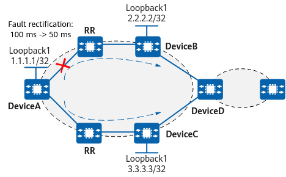

Understanding BGP Auto FRR
As a protection measure against link failures, BGP Auto fast reroute (FRR) is applicable to networks with primary and backup links. With BGP Auto FRR, traffic can be switched between two BGP next hops within sub-seconds.
With BGP Auto FRR, if a device learns multiple routes with the same prefix from different peers, the device uses the optimal route as the primary link to forward packets and the suboptimal route as a backup link. If the primary link fails, the system rapidly responds to the notification that the BGP route is unreachable and switches the forwarding path to the backup link.
Introduction to BGP Auto FRR
On the network shown in Figure 1, DeviceD sends the learned BGP routes to DeviceB and DeviceC in AS 100. DeviceB and DeviceC then send the routes to the RR, which reflects them to DeviceA. DeviceA then have two copies of routes, one with the next hop being DeviceB and the other with the next hop being Device C. A route-policy is configured to preferentially select one of the route copies. In this example, DeviceA preferentially selects the routes sent by DeviceB, and the backup link is link B.
If a node along link A becomes faulty or if link A fails, the next hop of the route from DeviceA to DeviceB becomes unavailable. If BGP Auto FRR is enabled on DeviceA, the forwarding plane quickly switches DeviceA-to-DeviceD traffic to link B, which ensures uninterrupted traffic forwarding. In addition, DeviceA performs route reselection based on prefixes. Consequently, it selects the route sent by DeviceC and then updates its FIB.
Single-Hop BGP BFD FRR
After BGP Auto FRR is configured, it still takes about 100 ms for BGP to switch traffic to the backup link after the fault occurs. During the period, traffic may be interrupted. To minimize the impact of this problem on services, you can configure single-hop BGP BFD FRR, which binds the BFD session status to the link status.

If the BFD session goes down, the link status of the corresponding interface also goes down. The underlying layer then quickly responds to the link changes, shortening the time for switching traffic to the backup link to about 50 ms.

Single-hop BGP BFD FRR can be configured in single-hop BFD scenarios, not in multi-hop BFD scenarios.
Single-hop BGP BFD FRR can speed up recovery from faults and improve the real-time link switching performance, meeting services' high requirements on quality and link switching performance.